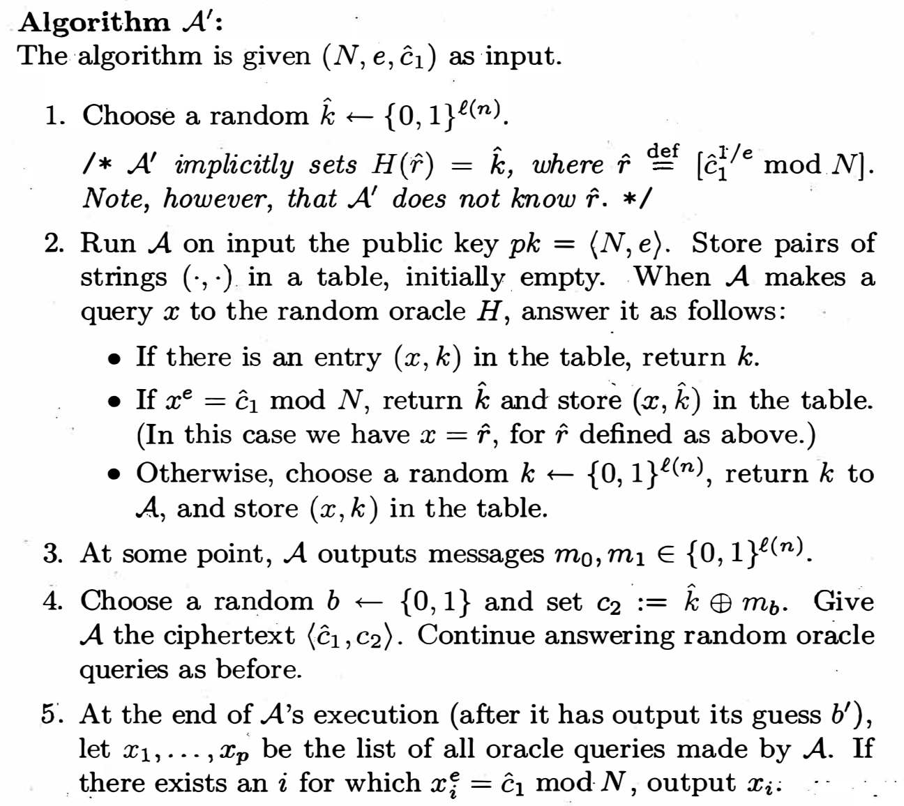

A function H: {0,1}*—>{0,1}*
If an adversary A has not explicitly queried the oracle on some point x, then the value of H(x) is completely random (at least as far as A is concerned)
Note that it is different from pseudorandom generator G(x), where G(x) is pseudorandom to x which is chosen uniformly at random and is unknown for the adversary. For random oracle, however, H(x) is truly random as long as the adversary has not query x before. This still holds even if x has been known and is not uniformly random.
There are few public-key cryptosystems that are both: (1) efficient enough in practice and (2) can be proven secure in the standard model. It is hard to design an efficient crypto system based on the number theory assumptions (e.g., factoring problem, DDH assumption, etc.). Therefore, users may prefer to use nothing instead of an inefficient algorithm.
An alternative approach is to prove the security in an ideal model, e.g., random oracle model. As long as the instantiation of the ideal model in practice is secure (but sure, such an instantiation may not exist), then the scheme proven secure in ROM should also be secure. In fact, there have been few real-world attacks on schemes proven secure in ROM. At least, such a proof can help to confirm there are no inherent design problems.
The fundamental reason is the belief [1]:
A proof in security in the random oracle model is significantly better than no proof at all.
Generally, the proof is done by a reduction algorithm:
If the scheme can be broken by the adversary in the random oracle, then a simulator can use this ability to violate some hard cryptographic assumptions.
The reduction or simulator has the following power:
programmability: The simulator can choose values for the output of H as it likes as long as the outputs are uniformly distributed. This gives much advantage for the simulator. For example, the simulator may construct H(x)=g^x mod N. With this power, the simulator can specially craft some constructs of hard problems.
Observability:The simulator can see all the queries that Adversary makes to the random oracle. Therefore, the simulator can leverage the power of the adversary to solve some hard problems.
In the formal model, we assume all the queries are private. Here, we are using Adversary as a subroutine within the reduction/ simulator.
Obviously, the textbook RSA encryption is not secured. Here, we show how to prove the following variant scheme is secure.
Gen: (N,e,d)< - G(1λ)
Enc: on input a public key (N,e) and a message m ∈{0,1}l(n):
(c1,c2) = (re mod N,H(r)⊕m)
Dec: m = H(c1d mod N) ⊕ c2
Intuitively, this scheme is secure. Suppose an adversary can break this scheme by query the oracle, then the RSA problem can be solved as follows:
Given (N,e, c1,k’) to the reduction algorithm (here, the simulator guess c1 is the ciphertext returned to the adeversary.), which makes the adversary run under the input (N,e) and ciphertext (c1,c2). Note that the adversary can get a ciphertext under chosen plaintext attack, thus the assumption is reasonable.
The adversary will query x to the oracle. If it happens that xe mod N = c1, the oracle will output k’, i.e., for any input x, if x^e=c1, then just output k1=H(x); Otherwise, choose a random k as H(x) and store (x,k) in the table.
As k’ is chosen randomly, the view of the Adversary is the same as that in the original setting. Note that the simulator can monitor all the queries made to the oracle. If the query occurs to be the random variable r, then the simulator can output the message (r) given c1 = re mode N. Therefore, the probability of breaking this scheme by ORM should equal to RSA, which is hard. Thus this scheme is hard.
A formal proof can be found in reference [1] as follows:

This concludes that the query is negligible since RSA problem is hard.
[1] Jonathan Katz, Yehuda Lindell, “Introduction to Modern Cryptography”,2007.
[2] M. Bellare and P. Rogaway, “Random oracles are practical: a paradigm for designing efficient protocols”, In ACM Conf. on Computer and Communication Security, 1993.